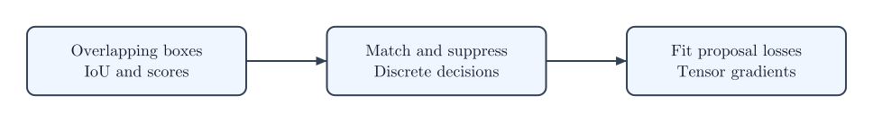
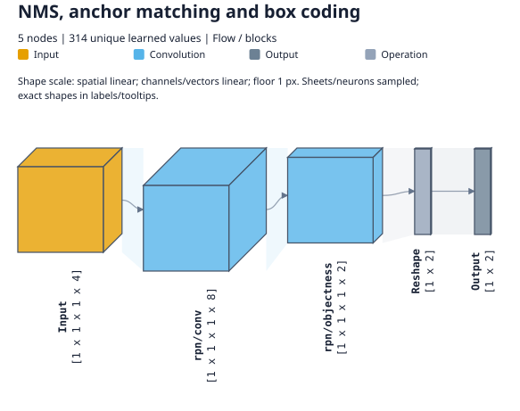
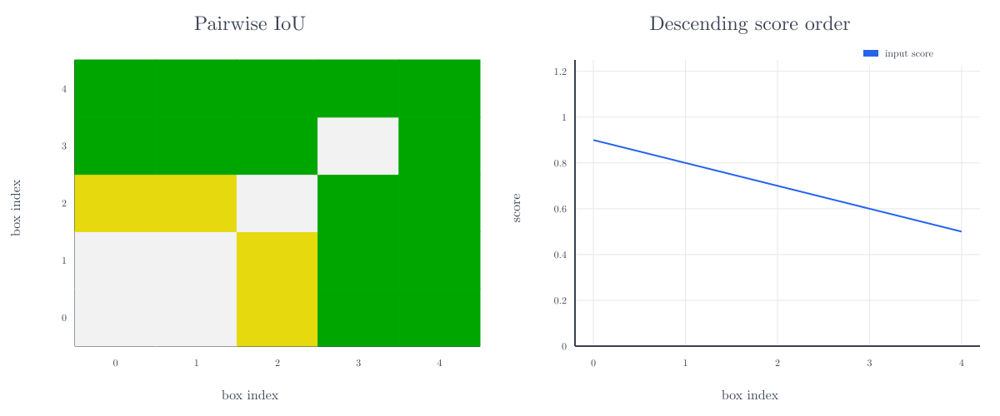
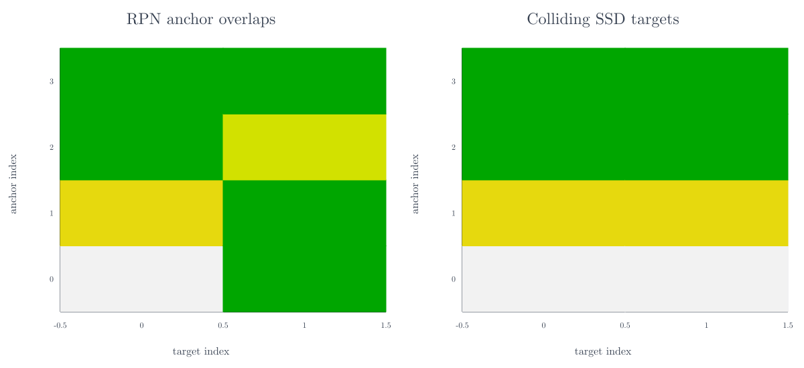
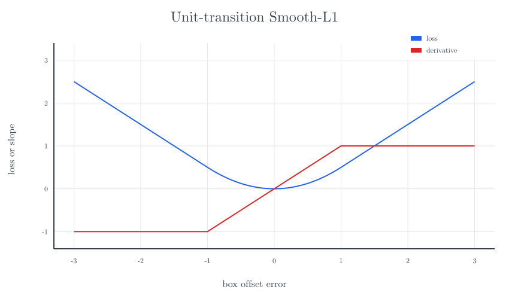
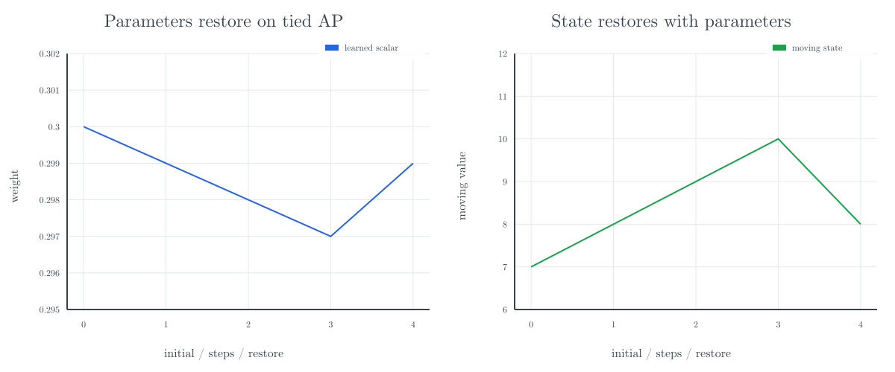

NMS, anchor matching and box coding
Abstract
Object detectors produce overlapping candidate boxes that must be assigned to targets, refined and reduced to a small detection set. This report checks tensor suppression, RPN/SSD matching, reversible box coding and stable proposal losses on hand-checkable fixtures, then exposes the optimizer and paired-checkpoint lifecycle.
Source example: examples/cpp/source/nn/1_convolutional_neural_networks/1.6_object_detection/nms_matching.cpp.
The method
For boxes A and B, IoU is intersection area divided by union area, with zero for an empty union. NMS costs quadratic overlap work in the worst case; matching stores an anchor-by-target overlap matrix. Neither operation is differentiable selection. Regression coding and proposal losses retain tensor gradients; training uses explicit Adam steps below.
The concept diagram below is drawn by dm::graphics::Diagram. Its editable C++
source is the complete block below; regeneration uses the same datamunge toolchain
as the numerical examples. Exports consume the saved local SVG.
#include <dm/dm.hpp>
int main() {
std::filesystem::create_directories("build");
dm::graphics::Diagram diagram;
diagram.node("n0", {0.0, 0}, "Overlapping boxes\nIoU and scores");
diagram.node("n1", {5.2, 0}, "Match and suppress\nDiscrete decisions");
diagram.node("n2", {10.4, 0}, "Fit proposal losses\nTensor gradients");
diagram.edge("n0", "n1").edge("n1", "n2");
diagram.save_svg("build/nms_matching_concept.svg");
}
Executed tensor architecture
This figure executes the inference configuration shown in the code, using a zero-valued shape probe without fitting or loading a checkpoint. Named stage boundaries group whole subgraphs where available; other nodes retain functional-layer detail. Exact batch-inclusive shapes and reachable parameter totals come from the trace. Shared linear scales map spatial dimensions and channel counts to blocks; the one-pixel visibility floor is disclosed in the legend. Labels use compact monospace text, rotate counterclockwise and sit beside their own glyphs. Arrows flow left to right; wide diagrams scroll at native size on the website.
#include <dm/dm.hpp>
int main() {
namespace n = dm::nn;
namespace m = n::models;
n::set_num_threads(2);
std::filesystem::create_directories("build");
n::ParameterStore p(17);
n::Module architecture_model(
[&](const n::Tensor& image) {
return n::models::BuildRpn(p, {{image, 4, 1, 2}}, 8).objectness_logits;
},
"NMS, anchor matching and box coding");
n::ModelPlotOptions options;
options.style = n::ModelPlotStyle::Flow;
options.detail = n::ModelPlotDetail::Blocks;
options.labels = {.type = n::ModelPlotLabel::NameAndShape, .size = 12, .wrap = 24};
options.spacing = {.layer = 24, .lane = 12, .label = 8, .margin = 20};
options.sizing.spatial_size = 96;
options.sizing.channel_size = 42;
options.sizing.minimum_extent = 1;
options.opacity = .8;
const auto diagram = architecture_model.plot(n::zeros({1, 1, 1, 4}), options);
diagram.save_svg("build/nms_matching_architecture.svg");
std::print(
"{} displayed nodes; {} reachable learned values.\n",
diagram.nodes().size(),
diagram.parameter_count());
}5 displayed nodes; 314 reachable learned values.

Simple examples: suppression and threshold equality
Boxes use continuous half-open (ymin,xmin,ymax,xmax) coordinates. Their area is
(ymax-ymin)*(xmax-xmin), with no pixel +1. Greedy NMS visits scores in descending
order and suppresses overlap *strictly greater* than the threshold. Thus a half-box
at IoU .5 survives beside its full box when the threshold is .5. Ties prefer the
lower input index. A zero-area box has IoU zero, even with itself.
The source records TensorFlow selections; this report checks the same recorded answers rather than running TensorFlow. Core NMS normalizes reversed corners; the old example wrapper additionally rejects them. The code below calls the core API directly. Selection is discrete and has no fitted parameters.
#include <dm/dm.hpp>
int main() {
namespace n = dm::nn;
n::set_num_threads(2);
const auto boxes = n::tensor({0., 0., 10., 10., 0., 0., 10., 10., 0., 0.,
10., 5., 20., 20., 30., 30., 40., 40., 40., 40.},
{5, 4});
const auto scores = n::tensor({.9, .8, .7, .6, .5});
const std::vector<std::vector<std::int64_t>> expected = {
{}, {0}, {0, 3, 4}, {0, 3, 4}, {}, {0},
{0, 2, 3}, {0, 2, 3, 4}, {}, {0}, {0, 1, 2}, {0, 1, 2, 3, 4}};
int fixture = 0;
std::print("| IoU threshold | limit | kept indices |\n|---:|---:|---|\n");
for (double threshold : {0., .5, 1.})
for (int limit : {0, 1, 3, 10}) {
const auto selected = n::non_max_suppression(boxes, scores, limit, threshold)
.indices.to_vector<std::int64_t>();
if (selected != expected[fixture++])
return 1;
std::print("| {:.1f} | {} |", threshold, limit);
for (auto i : selected)
std::print(" {}", i);
std::print(" |\n");
}
if (n::non_max_suppression(boxes, n::ones({5}) * .8, 100, .5).indices.to_vector<int>() !=
std::vector<int>{0, 2, 3, 4})
return 1;
if (n::non_max_suppression(n::zeros({0, 4}), n::zeros({0}), 10, .5).valid != 0)
return 1;
const auto groups = n::from_vector(std::vector<std::int64_t>{0, 0, 1, 2, 2});
const auto kept = n::batched_non_max_suppression(boxes, scores, groups, .5).to_vector<int>();
if (kept != std::vector<int>{0, 2, 3, 4})
return 1;
// A group identifies an (image,class) pair. The global cap here differs from
// a detector's per-image cap, which must be applied separately for each image.
const auto iou = n::box_iou(boxes, boxes);
auto heat = n::plot_tensor_map(n::reverse(iou, {0}), 0, 1);
heat.title("Pairwise IoU")
.x_label("box index")
.y_label("box index")
.x_limits(-.5, 4.5)
.y_limits(-.5, 4.5);
auto trace = dm::graphics::RPlot::create();
trace.lines({0, 1, 2, 3, 4}, scores.to_vector<double>(), "input score", {37, 99, 235})
.title("Descending score order")
.x_label("box index")
.y_label("score")
.y_limits(0, 1.25);
std::filesystem::create_directories("build");
dm::graphics::RLayout::create(1, 2)
.add(heat)
.add(trace)
.size(1200, 500)
.fit_panels()
.save_svg("build/nms_matching_suppression.svg");
std::print(
"Fourteen recorded selection fixtures passed, plus group separation. Rows/columns 0 and "
"1 are duplicates; box 2 overlaps them by exactly .5; box 4 has zero area.\n");
}| IoU threshold | limit | kept indices |
|---|---|---|
| 0.0 | 0 | |
| 0.0 | 1 | 0 |
| 0.0 | 3 | 0 3 4 |
| 0.0 | 10 | 0 3 4 |
| 0.5 | 0 | |
| 0.5 | 1 | 0 |
| 0.5 | 3 | 0 2 3 |
| 0.5 | 10 | 0 2 3 4 |
| 1.0 | 0 | |
| 1.0 | 1 | 0 |
| 1.0 | 3 | 0 1 2 |
| 1.0 | 10 | 0 1 2 3 4 |
Fourteen recorded selection fixtures passed, plus group separation. Rows/columns 0 and 1 are duplicates; box 2 overlaps them by exactly .5; box 4 has zero area.

Matching and box coordinates
An RPN assigns a target when maximum IoU reaches .7, background below .3, and
ignore (-2) between them. Forced best-anchor matches can rescue a low-overlap
target but can collide: later targets overwrite earlier claims. SSD instead first
gives every target a distinct anchor by greedily selecting the largest available
pair, then adds remaining matches at IoU .5. This is a greedy assignment, not a
maximum-total-IoU Hungarian solution. Even zero-overlap pairs can be forced by
SSD; empty targets leave every anchor as background (-1).
For anchor centre/size (ay,ax,ah,aw) and target (by,bx,bh,bw), coding uses
dy=(by-ay)/(.1*ah), dx=(bx-ax)/(.1*aw), dh=log(bh/ah)/.2, and similarly
for dw. Decoding reverses these operations, clipping log scales above 4.
The round-trip check keeps scales inside that clipping region.
#include <dm/dm.hpp>
int main() {
namespace n = dm::nn;
const auto anchors = n::tensor(
{0., 0., 10., 10., 0., 0., 10., 20., 30., 30., 40., 40., 60., 60., 70., 70.}, {4, 4});
const auto truth = n::tensor({0., 0., 10., 10., 30., 30., 45., 45.}, {2, 4});
const auto iou = n::box_iou(anchors, truth);
const auto rpn = n::match_boxes(iou, .7, .3, true);
if (rpn.to_vector<int>() != std::vector<int>{0, -2, 1, -1})
return 1;
const auto collision = n::box_iou(
anchors, n::concat({n::slice_axis(truth, 0, 0, 1), n::slice_axis(truth, 0, 0, 1)}, 0));
const auto ssd = n::models::MatchSsd(collision);
if (ssd.to_vector<int>() != std::vector<int>{0, 1, -1, -1})
return 1;
const auto grid = n::anchor_grid(2, 3, 4, {8, 16}, {.5, 1, 2});
const auto centers = n::boxes_to_center(grid);
if (grid.shape() != n::Shape{36, 4} || std::abs(centers.at({0, 0}) - 2) > 1e-6 ||
std::abs(centers.at({35, 1}) - 10) > 1e-6)
return 1;
const auto type = n::DType::Float64;
const auto t = n::arange(0, 1000).to(type);
const auto cy = 20 + 100 * n::abs(n::sin(t * .37)), cx = 20 + 100 * n::abs(n::cos(t * .23));
const auto h = 2 + 78 * n::abs(n::sin(t * .17)), w = 2 + 78 * n::abs(n::cos(t * .19));
const auto a = n::boxes_from_center(n::stack({cy, cx, h, w}, 1));
const auto offsets = n::sin(n::arange(0, 4000).to(type) * .13).reshape({1000, 4});
const auto b = n::decode_boxes(a, offsets);
const auto encoded = n::encode_boxes(a, b), recovered = n::decode_boxes(a, encoded);
const double error = n::max(n::abs(recovered - b)).item();
if (error > 1e-10 || n::max(n::abs(encoded - offsets)).item() > 1e-11)
return 1;
const auto known = n::encode_boxes(n::tensor({10., 20., 30., 60.}, {1, 4}),
n::tensor({12., 16., 36., 64.}, {1, 4}));
if (std::abs(known.at({0, 0}) - 2) > 1e-6 ||
std::abs(known.at({0, 2}) - std::log(1.2) / .2) > 1e-6)
return 1;
auto p = n::plot_tensor_map(n::reverse(iou, {0}), 0, 1);
p.title("RPN anchor overlaps")
.x_label("target index")
.y_label("anchor index")
.x_limits(-.5, 1.5)
.y_limits(-.5, 3.5);
auto q = n::plot_tensor_map(n::reverse(collision, {0}), 0, 1);
q.title("Colliding SSD targets")
.x_label("target index")
.y_label("anchor index")
.x_limits(-.5, 1.5)
.y_limits(-.5, 3.5);
std::filesystem::create_directories("build");
dm::graphics::RLayout::create(1, 2).add(p).add(q).size(1200, 550).fit_panels().save_svg(
"build/nms_matching_assignment.svg");
std::print(
"RPN assignments: 0, -2, 1, -1; colliding SSD assignments: 0, 1, -1, -1. Checked 36 "
"anchors and 1000 Float64 coding round trips; maximum coordinate error {:.12f}.\n",
error);
}RPN assignments: 0, -2, 1, -1; colliding SSD assignments: 0, 1, -1, -1. Checked 36 anchors and 1000 Float64 coding round trips; maximum coordinate error 0.000000000000.

Stable objectness and explicit optimization
The RPN objective is weighted binary cross-entropy plus positive-anchor Smooth-L1.
Using softplus(z)-z*y gives derivative sigmoid(z)-y, including at z=0.
Each term divides by its own weight count, floored at one. At two zero logits,
labels [1,0] give bias gradients [-.25,+.25]. With no positive anchors the
regression contribution is exactly zero. Smooth-L1 transitions continuously at
absolute error one, with bounded slope.
#include <dm/dm.hpp>
int main() {
namespace n = dm::nn;
n::ParameterStore p(17, n::DType::Float64);
const auto r = n::models::BuildRpn(p, {{n::zeros({1, 1, 1, 4}, p.dtype()), 4, 1, 2}}, 8);
const auto loss = n::models::RpnLoss(
r, n::from_vector(std::vector<double>{1, 0}, {1, 2}), n::ones({1, 2}, p.dtype()),
n::zeros({1, 2, 4}, p.dtype()), n::zeros({1, 2}, p.dtype()));
const auto g = n::grad(loss, {p.at("rpn/objectness/b")})[0];
if (std::abs(loss.item() - std::log(2.)) > 1e-12 || std::abs(g.at({0}) + .25) > 1e-12 ||
std::abs(g.at({1}) - .25) > 1e-12)
return 1;
const auto d = (n::arange(0, 121).to(p.dtype()) * .05 - 3).detach().requires_grad_();
const auto huber = n::models::DetectorSmoothL1(d);
const auto derivative = n::grad(n::sum(huber), {d})[0];
auto q = dm::graphics::RPlot::create();
q.lines(d.to_vector<double>(), huber.to_vector<double>(), "loss", {37, 99, 235})
.lines(d.to_vector<double>(), derivative.to_vector<double>(), "derivative",
{220, 38, 38})
.title("Unit-transition Smooth-L1")
.x_label("box offset error")
.y_label("loss or slope")
.y_limits(-1.4, 3.4);
std::filesystem::create_directories("build");
q.size(850, 500).save_svg("build/nms_matching_loss.svg");
std::print(
"Mean zero-logit BCE {:.12f}; foreground/background gradients {:.12f}, {:.12f}.\n",
loss.item(), g.at({0}), g.at({1}));
}Mean zero-logit BCE 0.693147180560; foreground/background gradients -0.250000000000, 0.250000000000.

Checkpoint and warm-start fixture
The source also tests the detector training lifecycle. This small fixture shows its optimizer and checkpoint decisions directly. The single learned scalar starts at .3; a separate moving-state scalar starts at 7. One Adam step on its squared value gives about .299 while state becomes 8. A perfect one-object validation detection has AP 1 before and after further fitting, so the strict improvement rule retains the restored baseline. This tests checkpoint logic, not detection learning. Warm starts restore learned parameters and model state; Adam moments intentionally start fresh. Source and output prefixes must differ.
#include <dm/dm.hpp>
int main() {
namespace n = dm::nn;
std::filesystem::create_directories("build/nms_checkpoints");
const std::string initial = "build/nms_checkpoints/initial",
continued = "build/nms_checkpoints/continued";
n::ParameterStore p(17), state(17);
p.get("weight", {}, n::init::constant(.3));
state.get("moving", {}, n::init::constant(7));
n::OptimizerConfig cfg;
cfg.kind = n::OptimizerKind::Adam;
std::vector<double> values{p.at("weight").item()}, moving{state.at("moving").item()};
{
n::Optimizer adam(p, .001, cfg);
for (int step = 0; step < 1; ++step) {
const auto objective = n::square(p.at("weight"));
adam.minimize(objective);
n::NoGradGuard guard;
state.at("moving").add_(n::scalar(1.));
}
}
p.save(initial + "_params.npz");
state.save(initial + "_state.npz");
values.push_back(p.at("weight").item());
moving.push_back(state.at("moving").item());
if (std::abs(values.back() - .299) > 2e-6 || moving.back() != 8)
return 1;
// Restore both stores, then create a NEW optimizer with fresh moments.
p.load(initial + "_params.npz");
state.load(initial + "_state.npz");
if (std::filesystem::absolute(initial).lexically_normal() ==
std::filesystem::absolute(continued).lexically_normal())
throw std::invalid_argument("warm start requires a separate output prefix");
p.save(continued + "_params.npz");
state.save(continued + "_state.npz");
const auto box = n::tensor({1., 1., 5., 5.}, {1, 4});
double best = n::box_iou(box, box).item(); // One perfect detection: precision=recall=AP=1.
n::Optimizer fresh_adam(p, .001, cfg);
for (int epoch = 1; epoch <= 2; ++epoch) {
const auto objective = n::square(p.at("weight"));
fresh_adam.minimize(objective);
{
n::NoGradGuard guard;
state.at("moving").add_(n::scalar(1.));
}
values.push_back(p.at("weight").item());
moving.push_back(state.at("moving").item());
const double validation_ap = n::box_iou(box, box).item();
if (validation_ap > best) {
best = validation_ap;
p.save(continued + "_params.npz");
state.save(continued + "_state.npz");
}
}
p.load(continued + "_params.npz");
state.load(continued + "_state.npz");
values.push_back(p.at("weight").item());
moving.push_back(state.at("moving").item());
if (std::abs(values.back() - .299) > 2e-6 || moving.back() != 8)
return 1;
auto a = dm::graphics::RPlot::create();
a.lines({0, 1, 2, 3, 4}, values, "learned scalar", {37, 99, 235})
.title("Parameters restore on tied AP")
.x_label("initial / steps / restore")
.y_label("weight")
.y_limits(.295, .302);
auto b = dm::graphics::RPlot::create();
b.lines({0, 1, 2, 3, 4}, moving, "moving state", {22, 163, 74})
.title("State restores with parameters")
.x_label("initial / steps / restore")
.y_label("moving value")
.y_limits(6, 12);
dm::graphics::RLayout::create(1, 2).add(a).add(b).size(1200, 500).fit_panels().save_svg(
"build/nms_matching_checkpoint.svg");
std::print(
"Explicit initial and fresh-Adam loops passed. Strict AP ties retain baseline: restored "
"weight {:.6f}, moving state {:.0f}, validation/test one-object AP {:.1f}.\n",
values.back(), moving.back(), best);
}Explicit initial and fresh-Adam loops passed. Strict AP ties retain baseline: restored weight 0.299000, moving state 8, validation/test one-object AP 1.0.

Regenerate adjacent views from this run
Conclusion
The computed results above describe the current executed experiment. Assess held-out errors, validation selection and the stated fitting budget together; these bounded instructional examples do not establish benchmark rankings.
References
- [TensorFlow, tf.image.non_max_suppression](https://www.tensorflow.org/api_docs/python/tf/image/non_max_suppression).
- [Ren et al. (2015), Faster R-CNN](https://arxiv.org/abs/1506.01497).
- [Liu et al. (2016), SSD: Single Shot MultiBox Detector](https://arxiv.org/abs/1512.02325).